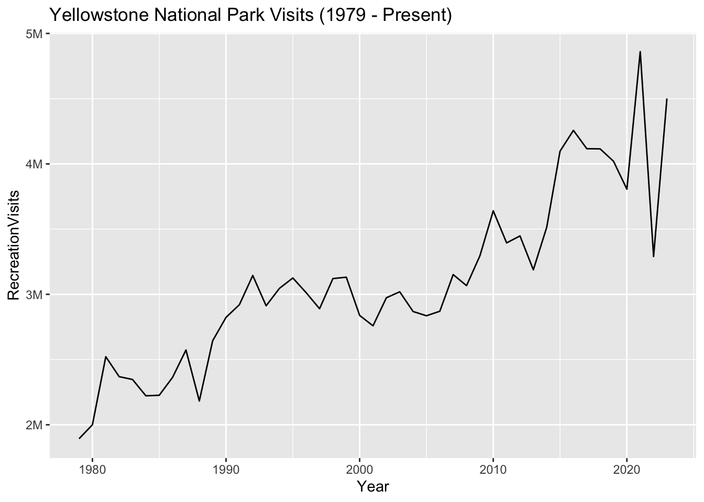
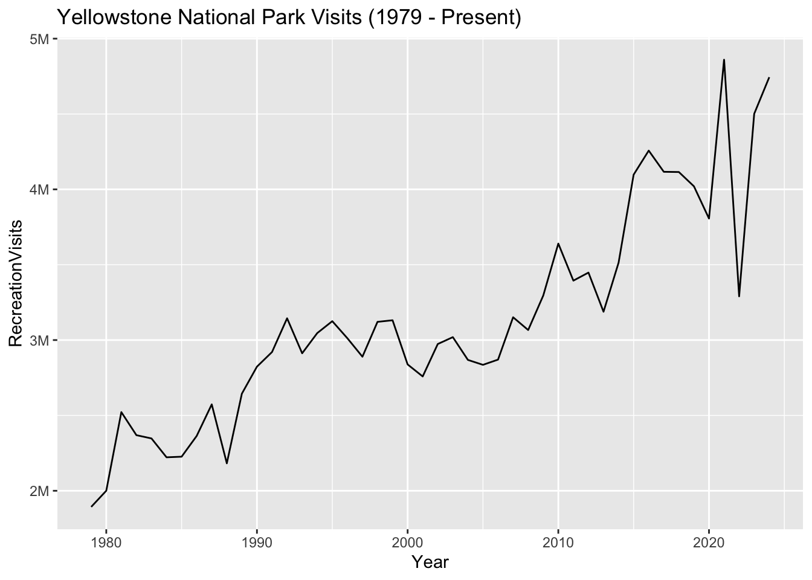

Introduction
This dataset contains the number of visits, per year, to each of the current 63 National Parks administered by the United States National Park Service (NPS), from 1979 to 2023. The NPS also collects visitation and use data about other park units, such as national battlefields, national rivers, and national monuments. However, information about other park units is not included in this particular dataset.
Creative Commons License
This work is licensed under CC BY 4.0

The National Park datasets included here are drawn from data published by the U.S. NPS, and most (but not all) of the contextual information is drawn from material published by the NPS.
We decided to publish this version of the data, along with our own synthesized documentation and narrative, because the original data is made available in an NPS data portal that is relatively hard to find and to use, and the documentation is distributed across many different web pages, PDFs, and other documents. (The NPS has created an interactive Microsoft Power BI dashboard to help users explore the data more easily.)
The datasets were curated and published by Melanie Walsh, and the data essay was written by Melanie Walsh and Os Keyes.
History
A national park is an area of land that a country’s government deems important enough to officially protect, preserve, and make available to the public. There are thousands of national parks around the world (some of which are featured in the Netflix documentary, “Our Great National Parks,” narrated by former President Barack Obama).
In the United States, the very first National Park—Yellowstone National Park, in Wyoming—was signed into law in 1872 by President Ulysses S. Grant.

Over the next several decades, a handful of other parks—such as Sequoia (1890), Yosemite (1890), Mount Rainier (1899), and Crater Lake (1902)—joined the system, too.
What is the most recent National Park?
The most recently added National Park is New River Gorge National Park in West Virginia. It was designated in 2020.

While the National Parks were originally created to protect precious, beautiful lands and to make them accessible to everyday people—a noble goal—it is important to remember that many of these lands were taken, sometimes forcibly, from Native American people who already owned, lived, and worked on them (Spence 2000; Beauchamp 2020). Today, there are still calls for the NPS to return the lands of the National Parks to Indigenous people.
In a similar vein, scholars have shown that early environmental conservation movements—movements that helped to spur the development of the National Parks—were troublingly intertwined with racism and eugenics movements (Beauchamp 2020). These prejudiced origins, combined with continuing forms of environmental racism (e.g., many parks are located far from cities, with limited public transporation options and limited community outreach), have contributed to the marginalization of people of color and other minorities in the parks. Research has shown that white people visit the parks more than other racial groups (Weber and Sultana 2013; Alba et al. 2022; Floyd and Johnson 2002). So while the National Parks are technically open to everyone, they are not equally accessible to everyone in the same way. And these exclusions shape the parks’ visitation data even before it’s counted.
So when and why did visit counting start at the U.S. National Parks? Well, according to the NPS, the counting of park visits started as early as 1904 (more than 10 years before the National Park Service itself was officially created). But at this time, and for the next 50 years or so, their data collection methods were mostly informal, inconsistent, and low-tech.
But in 1965, the NPS started getting serious about counting visits. That year, the U.S. Congress passed The Land and Water Conservation Fund Act of 1965. This act created a new source of government money specifically dedicated to protecting natural resources and expanding outdoor recreation infrastructure. Because the act stipulated that the amount of money allocated to each area should be “proportional to visitor use,” the NPS buckled down on counting visitor use. They “developed and institutionalized a formal system for collecting, compiling and reporting visitor use data.”
In 1979, the NPS comprehensively changed their counting procedure, and all parks began tracking visitor use by month (as opposed to year) across 11 different statistics. This is why the datasets featured here begin in 1979.1 Note: We aggregated monthly counts into yearly counts for the dataset featured in this essay. A dataset with visit counts by month is available in “Explore the Data.”
Code
# Note on installation: https://statsandr.com/blog/an-efficient-way-to-install-and-load-r-packages/
# Load the dplyr package for data manipulation
# Load the ggplot2 package for data visualization
# Load "ggthemes", which let's us use colorblind-compatible palettes. When we've only got one line, this will just be black.
# Load "scales" for abbreviating axis labels
library(dplyr, warn = FALSE)
library(ggplot2)
library(ggthemes)
library("scales")
# Load National Park Visitation data
np_data <- read.csv("https://raw.githubusercontent.com/melaniewalsh/responsible-datasets-in-context/main/datasets/national-parks/US-National-Parks_RecreationVisits_1979-2023.csv", stringsAsFactors = FALSE)
# Specify the colorblind palette
cb_palette <- colorblind_pal()(8)
# Turn off scientific notation
options(scipen = 999)
# Filter down to Yellowstone National Park
yellowstone_data <- np_data %>% filter(ParkName == "Yellowstone NP")
# Visualise it
ggplot(data = yellowstone_data) +
geom_line(aes(x = Year, y = RecreationVisits), color = cb_palette[1]) +
labs(title = "Yellowstone National Park Visits (1979 - Present)") +
# abbreviate numbers by millions and thousands
scale_y_continuous(labels = label_number(scale_cut = cut_short_scale()))
While today’s National Park data collection system is more formal and sophisticated than the one that the NPS used in 1904, there are still many inconsistencies, flaws, and limitations (as the NPS openly acknowledges). This data does not represent the exact number of people who visited the parks in the last 50 years—hardly! Think about how difficult it would be to count every single one of the millions of people who walked, hiked, backpacked, drove, shuttled, canoed, biked, or skied into each of the 63 different parks since 1979. These parks are located in dozens of different geographic areas, including mountains, volcanoes, deserts, canyons, wetlands, forests, and islands; the parks have experienced countless different weather conditions during this time, including blizzards, hurricanes, wildfires, avalanches, and extreme heat; and the parks have also been allocated varying amounts of money and staff members to do the counting. Given all this variability, it is simply not possible to count every single visit to every single National Park ever.
We believe the National Park visit data is useful to study and consider precisely for this reason: because it helps demonstrate that data never reflects reality precisely. It also demonstrates that collecting and analyzing data, even when it is flawed and approximate, is sometimes worthwhile—but only if you fully understand the data’s flaws, limitations, and history, and only if you incorporate these considerations into all subsequent analyses, interpretations, and takeaways.
Where did the data come from? Who collected it?
The National Park data on this website was originally organized and published by the NPS Social Science Program, which in turn runs the NPS Visitor Use Statistics program, an initiative that coordinates visitor use statistics across the parks. Thousands of staff members across all 63 parks were also involved in the data collection process.
According to the NPS, the Visitor Use Statistics program aims to:
- Provide a statistically valid, reliable, and uniform method of collecting and reporting visitor use data for each independent unit administered by the NPS
- Support regular collection, and timely publication, analysis and interpretation of these data
- Enact quality control checks, verify measurements, and ensure consistency and comparability of data among areas of the NPS
We accessed the original data through the NPS’s Visitor Use Statistics data portal, which publishes visit use data in alignment with the program’s stated goals. Through this portal, anyone can generate reports and download data for different visit use categories and time periods—at both national and individual park levels.
To download the data included here, we first selected “National Reports” in the data portal, and we then selected the “Query Builder for Public Use Statistics (1979 - Last Calendar Year)” report type. Here are the selections we made:
- For “Park Types,” we selected only “National Parks.”
- For “Years,” we selected all possible years (1979-2023).
- For “Regions,” we selected all possible regions.
- For “Field Type,” we selected only “Recreation Visits” (excluding the other 10 possible statistics: “NonRecreation Visits,” “Recreation Hours,” “NonRecreation Hours,” “Concessioner Lodging,” “Concessioner Camping,” “Tent Campers,” “RV Campers,” “Backcountry Campers,” “NonRecreation Overnight Stays,” and “Miscellaneous Overnight Stays”).
- For “Additional Fields,” we selected “State” and “Region.”
- We also selected the option of viewing the report as an annual summary of visit counts (as opposed to monthly visit counts).

If you choose to download this report as a CSV file, it will unfortunately not look exactly like the report pictured in Figure 3; instead, the CSV will include all visit and use types, and it will include visit and use information by month rather than by year. When I (Melanie Walsh) have compiled this data to share with my students in the past, I have sometimes downloaded the CSV file, removed the columns that I’m not interested in, and aggregated the data by year programatically. In other cases, I have simply copied and pasted the annual summary report into a CSV file.
In either case, it is usually necessary to explicitly transform the format of the “RecreationVisits” column into a number and to remove the commas that separate the numbers by thousands (a transformation that you can do with spreadsheet applications like Excel or Google Sheets, or with a programming language like Python or R). Finally, we published the data to this project’s GitHub repository for easier storage and access.
Why was the data collected? How is the data used?
The NPS collects visit data partly because the government requires it, as we’ve already discussed. But the NPS also uses the visit data for other internal purposes—to help determine which parks might need more staff members and programming, which hiking trails might need more maintenance, which natural areas might need more protection, or which visitor centers might need more bathrooms.
The visit data also helps the communities and businesses surrounding the parks understand how they can best provide and share resources, like emergency vehicles, sanitation, and water. For example, if there’s been a large influx of hikers to Mount Rainier National Park in recent years, that would be an important thing for the surrounding community to know. Because those hikers would probably need more ambulance trips and rescue helicopters (unfortunately but inevitably), and the surrounding towns wouldn’t want visitors to the National Park booking up all the available emergency vehicles in town.
](https://www.nps.gov/orgs/1207/images/ECONOMIC-2020.jpg)
The visitation data also helps the NPS estimate the beneficial impact—economic and otherwise—that the parks have on nearby communities and the nation at large (Figure 4). For example, in 2021, an NPS report showed that “4.5 million visitors to Grand Canyon National Park…spent an estimated $710 million in gateway regions near the park,” which “supported 9,390 jobs in the local area.” These estimations are important because they help the parks advocate for more funding, support, and attention.
The data is also frequently reported on by journalists, who use it to highlight the most popular parks and noteworthy visitation records, and to point their readers to parks where they might be able to find some peace and quiet (see articles in Thrillist, Smithsonian, and CNN).
Discussion Question 1
How else might the National Park visit data be used? How might it be used by artists, historians, literary scholars, sociologists, or librarians?
For more, see Discussion Q 1.
What’s in the data? What “counts” as a visit?
Now that we know how the data is used, let’s dive into the data itself. What’s actually in this dataset? What “counts” as a visit?
To get started, let’s load the dataset and examine a random sample of rows.
Code
# https://statsandr.com/blog/an-efficient-way-to-install-and-load-r-packages/
# Load the dplyr package
library(dplyr, warn = FALSE)
# Load National Park Visitation data
np_data <- read.csv("https://raw.githubusercontent.com/melaniewalsh/responsible-datasets-in-context/main/datasets/national-parks/US-National-Parks_RecreationVisits_1979-2023.csv", stringsAsFactors = FALSE)
## Look at the structure of the dataset, randomly sample 10 rows
np_data %>% slice_sample(n = 10)| ParkName | Region | State | Year | RecreationVisits |
|---|---|---|---|---|
| Great Smoky Mountains NP | Southeast | TN | 2007 | 9372253 |
| Mammoth Cave NP | Southeast | KY | 2017 | 587853 |
| Isle Royale NP | Midwest | MI | 1980 | 14977 |
| Guadalupe Mountains NP | Intermountain | TX | 2015 | 169535 |
| Theodore Roosevelt NP | Midwest | ND | 1989 | 459171 |
| Gates of the Arctic NP & PRES | Alaska | AK | 2022 | 9457 |
| Wrangell-St. Elias NP & PRES | Alaska | AK | 2023 | 78305 |
| Denali NP & PRES | Alaska | AK | 2006 | 415935 |
| Saguaro NP | Intermountain | AZ | 1991 | 679034 |
| Great Sand Dunes NP & PRES | Intermountain | CO | 1990 | 272136 |
Here we see five columns – “ParkName”, “Region”, “State”, “Year”, and “RecreationVisits.” The first four are pretty self-explanatory, but why is the fifth labelled “RecreationVisits” rather than “Visits” or “Visitors”?
It turns out that the NPS counts visits, not visitors (which would be more difficult to track), and they distinguish between different kinds of visits to their parks. First, there are reportable and non-reportable visits. When NPS employees or their families go to the parks, these visits are non-reportable. But pretty much everything else is reportable. Within reportable visits, there are two more types of visits: recreation and non-recreation visits. Recreation visits are when people are visiting the parks for fun, vacation, exercise, school trips, etc., and non-recreation visits are when people are visiting the parks for other reasons. For example, some people need to travel through the parks, either because a highway runs through the park, or because they live on “inholdings” (private property that is surrounded by a National Park on all sides). Other people need to visit the parks because they have business to conduct.
Here’s a full list of the “reportable non-recreation” visits, according to the NPS:
- Persons going to and from inholdings across significant parts of park land;
- Commuter and other traffic using NPS-administered roads or waterways through a park for their convenience;
- Trades-people with business in the park;
- Any civilian activity a part of or incidental to the pursuit of a gainful occupation (e.g., guides);
- Government personnel (other than NPS employees) with business in the park;
- Citizens using NPS buildings for civic or local government business, or attending public hearings;
- Outside research activities (visits and overnights) if independent of NPS legislated interests (e.g. meteorological research).
Carefully reviewing this list reveals that the term “recreation visit” excludes a significant number of visits and individuals. It also raises important questions about how the NPS distinguishes between different types of visits, which we will explore further below.
Discussion Question 2
What are the potential consequences of considering these visits to be non-recreation vs. recreation visits?
For more, see Discussion Q 2.

The list also prompts us to consider those whose presence in the parks doesn’t fit neatly into the “visit” category at all. For instance, a portion of Badlands National Park in South Dakota overlaps with the Pine Ridge Indian Reservation, which is “owned by the Oglala Sioux Tribe and managed by the National Park Service under an agreement with the Tribe.” According to the NPS, when traveling through this area, visitors might encounter “signs of religious worship” from Tribal members, such as “prayer sticks” or pieces of “brightly colored fabric tied to a shrub,” and they are advised to “respect [the Tribal members’] beliefs and practices and leave these objects.” These symbols woven into the landscape underscore that members of the Oglala Sioux Tribe are not visitors to the Badlands but stewards and residents with deep ancestral connections. It reveals that the National Park data’s focus on “visits”—–whether reportable or non-reportable, recreational or non-recreational—–fails to account for those who are not visitors, those who own and live on the land, and those whose ancestors lived on the land before the NPS even existed.
How was the data collected?
At this point, we know what counts as visit, but how does the NPS actually count these visits and collect data? And how do they differentiate between the different types of visits? Take a moment and see if you come up with a few guesses.
It turns out that each park counts visits differently. At many parks, each entrance at each park even counts visits differently.
If you go to the “Park Reports” tab in the NPS Data Portal, you can look up an individual park and download a PDF file called “Visitor Use Counting Procedures,” which details exactly what procedures they use to count visits at this park. Most of the parks have several PDFs because their counting procedures have changed many times over the years!
Activity 2
How are the procedures for three different parks similar or different? For more, see Activity 2.
To count visits, most parks use a combination of automatic traffic counters and manual counting–—that is, staff members who use their eyeballs to literally count the number of people arriving by foot, bike, bus, cross-country skis, snowmobile, boat, canoe, etc.
Whether automatic or manual, these counts are usually modified with specially designed mathematical formulas, which are supposed to produce the most accurate estimate for recreation visits at any given location. Staff members add, subtract, multiply, and divide the counts based on a variety of factors, such as the season or the entrance (e.g. assuming that more people would likely be arriving in a car in the summer months at the most popular gate than in the winter months at the least popular gate).
For instance, in the summer months (May through November) at Voyageurs National Park in northern Minnesota—a park dominated by lakes and waterways—they estimate visits by taking the number of visits to visitor centers, and then adding the estimated number of fishermen, houseboaters, and backcountry overnight stays. To take just one of these categories as an example, they estimate the number of fishermen by “taking the sum of the visitor center counts and applying the regression equation in Table 1,” which is displayed above. In August, that number would be (-1.06) * VISITOR CENTER COUNTS + 37,021. However, if the month is November, and if the visitor count exceeds 17,00, “then fishermen are estimated at 0.” These detailed instructions point to the countless decisions and methodological choices that underlie the National Park visit data. These manipulations are arguably necessary to achieve “statistically valid, reliable, and uniform” collection methods and data, as is the program’s goal, but they also reveal the ever persistent gap between recorded data and reality.
Code
# Filter down to Voyageurs National Park
voyageurs_data <- np_data %>% filter(ParkName == "Voyageurs NP")
# Visualizee it
ggplot(data = voyageurs_data) +
geom_line(aes(x = Year, y = RecreationVisits), color = cb_palette[8]) +
labs(title = "Voyageurs National Park Visits (1979 - Present)") +
# abbreviate numbers by millions and thousands
scale_y_continuous(labels = label_number(scale_cut = cut_short_scale()))
Consider, next, Everglades National Park in Florida. At the Shark Valley Entrance, there is a pneumatic tube traffic counter (Figure 6) that counts the number of cars that pass over it. The Everglades NP staff members then apply different mathematical operations to this number in order to arrive at what they think is the most accurate estimate of recreation visits:
The traffic count is divided by 2 to account for entry and exit. The adjusted traffic count is reduced by the number of buses, the number of bicycles counted when the entrance station is open, 127 bicycles per month to account for after-hours use, and by 200 non-recreation vehicles per month October through May and 100 non-recreation vehicles per month June through September. The traffic count is further reduced by 350 non-reportable (NPS) vehicles per month. The reduced count is multiplied by 2.17 persons per vehicle.
Like Voyageurs NP in Minnesota, Everglades NP modifies their raw visit data in many ways. Once again, these modifications are arguably necessary, but they are nevertheless extensive and almost certainly subject to debate.
What’s more, the devices that the NPS uses to count visits—such as pneumatic tube counters or induction loop counters (magnetized coils of wire that are installed under a road, and that “trip” when a vehicle passes over them)—sometimes break.
For example, according to the NPS data logs, the induction loop counter at one of the main entrances at Crater Lake National Park in Oregon broke in 2012 and wasn’t repaired for at least a year:
2/1/2012 | The Traffic Counter at Annie Springs Entrance Station was not functioning properly and therefore we have a count of zero.
3/1/2012 | Broken counter at Annie Springs Entrance, unable to record numbers.
4/1/2012 | Traffic counter was broken for the beginning of the month and may have low numbers.
10/1/2012 | Counts estimated by Butch
11/1/2012 | TRAFFIC COUNT AT ANNIE SPRINGS ENTRANCE NOT AVAILIBLE
12/1/2012 | TRAFFIC COUNT AT ANNIE SPRINGS ENTRANCE NOT AVAILIBLE
1/1/2013 | Traffic count at Annie Springs estimated.
2/1/2013 | Traffic count at Annie Springs estimated.
In some months, the broken counter meant that the number of recorded visits at this entrace was recorded as zero. In other months, park staff—including someone named Butch—decided to estimate the counts.
You can see a similar, but more severe, example of a broken counter at Carlsbad Caverns National Park in California, where it appears that visits have had a recent decline since 2019:
Code
# Load the "ggplot2" package (which we'll be using a lot more)
library(ggplot2)
# Let's also load "ggthemes", which let's us use colorblind-compatible palettes. When we've only got one line, this will just be black.
library(ggthemes)
# And specify the colorblind palette
cb_palette <- colorblind_pal()(8)
# Turn off scientific notation
options(scipen = 999)
# Filter down to Carlsbad Caverns National Park
carlsbad_data <- np_data %>% filter(ParkName == "Carlsbad Caverns NP")
# Visualise it
ggplot(data = carlsbad_data) +
geom_line(aes(x = Year, y = RecreationVisits), color = cb_palette[2]) +
labs(title = "Carlsbad Caverns National Park Visits (1979 - Present)") +
# abbreviate numbers by millions and thousands
scale_y_continuous(labels = label_number(scale_cut = cut_short_scale()))This decline may be due, in part, to the COVID-19 pandemic. But the NPS logs also show that the main induction loop counter at Carlsbad Caverns broke in 2019 and has remained broken for multiple years:
9/1/2019 | Traffic counter apparently has been broken since July. Traffic counts are estimated.
4/1/2020 | Main road traffic counter is broken, I have estimated the count.
12/1/2020 | Corona virus closure that began in November ended on December 4th. Main road traffic counter remains broken.Possible problem with Loop Road counter.
4/1/2022 Main road traffic counter remains broken. Rattlesnake Springs traffic counter seems to be off, I will henceforth provide estimates.
9/1/2023 | Loop Road and backcountry closed due to flood damage. Slaughter Canyon Cave remains closed Traffic counter on main road remains broken.
Activity 1
Now that we’ve talked about how data is collected (and the fragility of some of those methods), it’s a good time to think about how even the same method, deployed at different places, might be differently unreliable. For more, see Activity 1.
What data is missing? How is uncertainty handled?
We already know that there is a lot missing from the National Park visit data. There are people who never make it the parks—and thus never make it into the dataset—because of environmental racism and a history of discrimination and colonialism that is intertwined with the parks. There are people who don’t fit neatly into the category of a visit, such as those who live inside the parks. There are also people who are missed by the parks’ various counting procedures and manipulations.
What else might be missing or uncertain? It turns out that the data itself can point us to some answers. An important step in Exploratory Data Analysis (EDA) is to analyze key summary statistics for your data, such as maximum, minimum, or average values. This step can reveal important patterns, problems, or inconsistencies in the data, and point to parts of a dataset’s backstory that need to be researched and understood further. Exploring summary statistics for the National Park data— specifically, minimum values—reveals a few curious outliers that point us to key areas of uncertainty.
If you filter the National Park visit data for the parks with the lest (or minimum) number of visits since 1979, you will notice that there are some parks that had zero visits in a given year.
Code
# Filter for minimum RecVisits
least_visited <- np_data %>% filter(RecreationVisits == min(RecreationVisits))
# Number of rows for least visited
num_rows <- nrow(least_visited)
# Show some of them
least_visited %>% slice_sample(n = min(10, num_rows))| ParkName | Region | State | Year | RecreationVisits |
|---|---|---|---|---|
| Kobuk Valley NP | Alaska | AK | 2015 | 0 |
| Kobuk Valley NP | Alaska | AK | 2014 | 0 |
| Katmai NP & PRES | Alaska | AK | 1995 | 0 |
| National Park of American Samoa | Pacific West | AS | 2003 | 0 |
You might guess that there are no visits in these years because these parks are all located in remote places, like rural Alaska or American Samoa.
If we look at the visitation trends for Kobuk Valley National Park in Alaska, for example, we can see that a couple of years with zero visits isn’t a huge aberration from the trend:
Code
# Filter down to Mount Rainier National Park
kobuk_data <- np_data %>% filter(ParkName == "Kobuk Valley NP")
# Visualise it
ggplot(data = kobuk_data) +
geom_line(aes(x = Year, y = RecreationVisits ), color = cb_palette[6]) +
labs(title = "Kobuk Valley National Park Visits (1979 - Present)") +
# abbreviate numbers by millions and thousands
scale_y_continuous(labels = label_number(scale_cut = cut_short_scale()))
But after a little digging, we found out that in 2014 and 2015, Kobuk Valley National Park actually didn’t count visitors at all.
If we look at the visitation reports for Kobuk Valley in 2014, they say that “the park is developing a new counting system and has made the decision not to report visitor counts until the new system is in place.” Though they didn’t count visitors at all, they still recorded a zero in those two years. This hard number makes it seem conclusive, like there were truly zero people who stepped onto the park lands in those years.
In 2015, John Quinley, the Alaska regional spokesperson for the NPS, spoke with the Anchorage Daily News about this issue, and he admitted that “it might have been better if park statisticians had put something other than a zero in the visitor box for 2014 — say maybe a question mark.”
Activity 3
Can you find evidence of people visiting Kobuk Valley National Park in 2014 and 2015? For more, see Activity 3.
Discussion Question 3
Why would you or wouldn’t you want to record a question mark in this dataset? For more, see Discussion Q 3.
The decision not to record visits in certain years seems reasonable on its face, but we’ve also seen a lot of parks in more highly-frequented areas that, when faced with a similar situation, chose to provide an estimate for a certain year based on average counts from previous years, rather than simply declare that nobody visited.
When parks get more visits, they usually get more money, resources, and staff. Once outfitted with more funding, resources, and staff, they can usually attract and support even more visitors. By contrast, a dip in visitation data can potentially lead to a cycle of stagnation or decline. The choice to record zeros for Kobuk Valley NP in 2014 and 2015 was likely made out of a sense of scientific responsibility and integrity. It’s unclear how, if at all, this choice impacted the park. But this example highlights how data collection decisions can have real-world impacts, and how the people making these choices are often aware of these impacts and must weigh trade-offs—not only from a scientific or statistical perspective, but also from a social, economic, political, and even personal perspective.
Conclusion
The NPS’s visitation data is a valuable resource that gives us a glimpse into the country’s relationship with the National Parks—some of the world’s most precious natural resources—over the last 50 years. This data is integral to the maintenance and growth of the parks, to environmental conservation, to gateway communities, and to our historical and sociological understanding. But the National Park visit data, like all data, is also approximate and imperfect. As we have seen, it is collected by imperfect devices, such as traffic counters that are vulnerable to weather or malfunctioning. But even more importantly, it is collected and shaped by people, people who not only count some of the visits manually, but who also decide what counts as a visit, how to count visits (e.g., to use this technology or that formula) and which numbers to record when things don’t go as planned. There are endless interesting, important, and fun analyses that we can do with this visit data, but to really make sense of it in any meaningful way, we need to dig into and consider the people, context, and circumstances that shaped it.
References
Alba, Charles, Bing Pan, Junjun Yin, William L. Rice, Prasenjit Mitra, Michael S. Lin, and Yun Liang. 2022. “COVID-19’s Impact on Visitation Behavior to US National Parks from Communities of Color: Evidence from Mobile Phone Data.” Scientific Reports 12 (1): 13398. https://doi.org/10.1038/s41598-022-16330-z.
Beauchamp, Toby. 2020. “Beyond the ‘Pine Pig’: Reimagining Protection Through the US National Park Ranger.” Radical History Review 2020 (137): 96–118. https://doi.org/10.1215/01636545-8092798.
Floyd, Myron F., and Cassandra Y. Johnson. 2002. “Coming to Terms with Environmental Justice in Outdoor Recreation: A Conceptual Discussion with Research Implications.” Leisure Sciences, January. https://doi.org/10.1080/01490400252772836.
Spence, Mark David. 2000. Dispossessing the Wilderness: Indian Removal and the Making of the National Parks. New York; NY: Oxford University Press.
Weber, Joe, and Selima Sultana. 2013. “Why Do So Few Minority People Visit National Parks? Visitation and the Accessibility of ‘America’s Best Idea’.” Annals of the Association of American Geographers 103 (3): 437–64. https://doi.org/10.1080/00045608.2012.689240.
Explore the Data
Programming Exercises
The National Park visitation data by year and month is well-suited for teaching introductory data analysis, manipulation, and visualization methods.
Based on our experience, the data is particularly useful for teaching filter and groupby functions, where students can, for example, filter by individual parks, states, or regions, or groupby and calculate summary statistics for different parks, states, regions, or years.
The data is also useful for teaching basic and advanced visualization methods, like creating line plots over time or customizing plot aesthetics (e.g., abbreviating millions and thousands, altering axis ranges).
When working on visualization methods, we often ask students to share plots in a communal class forum, such as a shared Google Doc or Discord/Slack. This approach can be effective for building community; showcasing different ways of representing similar data; and enabling instructors to identify common strengths or problems.
| Date | Title | Categories |
|---|---|---|
| Aug 1, 2024 | DPLYR Groupby with National Park Visitation Data (Exercise) | dplyr, exercise |
| Aug 1, 2024 | DPLYR Groupby with National Park Visitation Data (Solution) | dplyr, exercise, solution |
| Feb 26, 2024 | Introduction to DPLYR with National Park Visitation Data (Solution) | dplyr, exercise, solution |
| Feb 26, 2024 | ggplot Customization with National Park Visitation Data (Solution) | ggplot, advanced, solution |
| Feb 26, 2024 | Introduction to DPLYR with National Park Visitation Data (Exercise) | dplyr, exercise, solution |
No matching items
| Date | Title | Categories |
|---|---|---|
| Aug 1, 2024 | Pandas Groupby with National Park Visitation Data (Exercise) | pandas, exercise |
| Aug 1, 2024 | Pandas Groupby with National Park Visitation Data (Solution) | pandas, exercise, solution |
No matching items
Activity 1
Devices Will Break
It is inevitable that the devices that the National Park Service uses to count visits to the parks — like induction loop counters installed on the road — will break. But they will also get fixed at different rates, in different locations, as we could see in the case of Crater Lake National Park (where a counter was fixed quickly) and Carlsbad Caverns National Park (where a broken counter from 2019 still has not been fixed).
There are many reasons for these disparities, but some of the big ones might be geography and resources. The more remote a park, the harder it is to get a repair team to it. The less-resourced a park, the lower the likelihood they have on-site repair teams, or are prioritized by the repair teams that can be dispatched.
With this in mind, look at the locations of the following parks. Suppose that each one has an outage in their induction loop counter: which ones would you expect to be fixed first, and why? Research the parks, and rank them on a scale of 1 to 5 (1 being highest, and 5 being lowest) of which would be fixed quickest.
| Park | Priority (1-5) | Reason |
|---|---|---|
| Acadia NP | ||
| Lassen Volcanic NP | ||
| Saguaro NP | ||
| Yosemite NP | ||
| Mammoth Cave NP |
Activity 2
Counting Procedures
The National Park Service sometimes fills in missing data with hard numbers or approximates data by applying special mathematical formulas. This is necessary work, but it is also under-explained work.
To see this in action, go to the NPS page that documents park reports and down the “Visitor Use Counting Procedures” PDF for three different parks.
How are the procedures for these three parks similar or different? What kind of effect do you think this has on the resulting data? What do you think is the best way of documenting this information and communicating it to users of the data?
Activity 3
Missing Evidence
In 2014 and 2015, Kobuk Valley National Park reported that there were zero visitors to the park.
Use publicly available internet data—Flickr photos, Twitter posts, etc.—to try and find evidence of people visiting the park. (Hint: There is existing evidence to find!) Consider how you might use tags and metadata categories to find what you’re looking for.
Based on your findings, how do you think, differently, if at all, about Kobuk Valley’s decision to record zero visits and about alternative methods for counting visits?
Discussion Question 1
Alternative Uses of the Data
We discussed some of the ways the National Park visit data is used. How else might the data be used? How might it be used by artists, historians, literary scholars, sociologists, or librarians?
Discussion Question 2
“Non-Recreation” Visits
Read through the full list of the “reportable non-recreation” visits, according to the NPS:
- Persons going to and from inholdings across significant parts of park land;
- Commuter and other traffic using NPS-administered roads or waterways through a park for their convenience;
- Trades-people with business in the park;
- Any civilian activity a part of or incidental to the pursuit of a gainful occupation (e.g., guides);
- Government personnel (other than NPS employees) with business in the park;
- Citizens using NPS buildings for civic or local government business, or attending public hearings;
- Outside research activities (visits and overnights) if independent of NPS legislated interests (e.g. meteorological research).
What are the potential consequences of considering these visits to be non-recreation vs. recreation visits?
Discussion Question 3
Recording Uncertainty
In 2014 and 2015, Kobuk Valley National Park recorded zero visits, even though they decided not to count visits at all. John Quinley, the Alaska regional spokesperson for the NPS, spoke with the Anchorage Daily News about this issue, and he admitted that “it might have been better if park statisticians had put something other than a zero in the visitor box for 2014 — say maybe a question mark.”
Why would you or wouldn’t you want to record a question mark in this dataset? How would this impact a qualitative vs quantitative analysis of the data?
What else could you use to record uncertainty? What would be the potential consequences of that choice?
Footnotes
The NPS also offers annual visitation information between 1904-1979, but it is a separate, less consistent dataset.↩︎